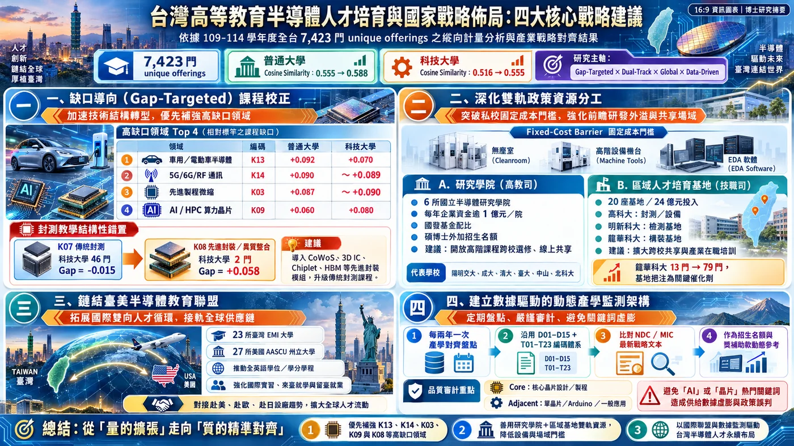

從課程數、擴散、集中、核心程度到技術方向，可以把「大學是否回應半導體轉型」拆成可檢驗的多個面向。
國家創新系統研究常看專利、研發與畢業生；本研究把「課程供給」視為政策／產業變化轉化成教學能力的組織介面。
Quantity、diffusion、breadth、depth、appliedness、frontierness、alignment 不應被壓成單一分數。
兩類大學可以在「方向與速度」上趨同，同時在「課程內容與制度任務」上維持差異。
至少要同時看 provider diffusion、existing-provider intensity、core/breadth、frontier technology depth 與 alignment。
科技大學與一般大學可依任務建立互補 portfolio，而不是用同一套課程模板。
先進製程、封裝、量測、設備等領域可能具有高固定成本，可評估共享實驗室、區域基地、跨校課程與產業設備。
下一步應接 job postings、職能框架、實習職缺、畢業流向與薪資，才能把「技術方向」連到真正的人力需求。
只用「半導體／晶片」檢索，可能漏掉 VLSI、microelectronics、EDA、device physics 等未含關鍵字課程。
Pilot120、rule freezing、confidence flags 與 sensitivity 已完成，但真正獨立盲人類外部驗證尚未完成。
沒有直接量測修課完成、learning outcomes、實驗強度、技能熟練度、就業、薪資或工作表現。
Enrollment 是課程登記 instances，同一學生多門課會重複計。
目前 PPML 沒有 school-year STEM enrollment / institution-size denominator，因此估計的是課程 volume，不是標準化強度。
AY109 adoption 左設限，且多項政策重疊；目前不做 DiD / event-study 因果聲稱。
文件提及權重不是職缺、薪資、投資或生產彈性；17 維度也可能互相重疊。
較適合推論機制，不應假設其他國家的數值會一樣。
